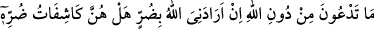

38. Andolsun ki onlara: “Gökleri ve yeri kim yarattı?” diye sorsan, elbette
“Allah’tır” derler. De ki: “Öyleyse bana söyler misiniz? Allah bana bir zarar
vermek isterse, Allah’ı bırakıp da taptıklarınız, O’nun verdiği zararı giderebilir mi?
Yahut Allah, bana bir rahmet dilerse, onlar O’nun bu rahmetini önleyebilirler mi?”
De ki: “Bana Allah yeter. Tevekkül edenler, ancak O’na güvenip dayanırlar.”
“Andolsun ki onlara:” Seni kendi ilâhları ile korkutan o müşriklere: “Gökleri ve yeri
kim yarattı?” Âlem diye ifâde edilen bu iki cinsi kim yoktan var etti “diye sorsan,
elbette “Allah’tır”; yâni onları Allah yarattı “derler.” Çünkü yaratıcılığın Allah’a
mahsus olduğunun delili gâyet açıktır.
Birinci/“__WORD__deki “lâm” yemîne hazırlık ve giriş için ikinci/“__WORD__nin başındaki lâm
ise onun cevabıdır ve iki cevap yerine gelmiştir.
et-Te’vîlâtü’n-Necmiyye’de der ki: “Âyet fıtrî îmânın mîsak gününden beri insanın
yaratılışında yerleştirilmiş olduğuna işâret etmektedir. Ki o vakit Allah onları
kendilerine şâhid tutmuş ve “Ben sizin Rabbiniz değil miyim?” buyurmuş, onlar da
“Evet (buna) şâhid olduk” demişlerdir (bk. el-A’râf, 7/172). Yine Allah Teâlâ
“Yüzünü, Allah’ın, kullarını yaratmış bulunduğu fıtrata çevir” (er-Rûm, 30/30)
buyurmuştur. Hz. Peygamber (s.a.) de “Her doğan fıtrat üzere dünyaya gelir.”[117]
buyurmuştur. Şu halde bu ikrârın eseri, kâfir bile olsa insanda dâimâ mevcuddur. Fakat
o ancak Allah’a, meleklerine, kitaplarına, peygamberlerine ve onların getirdiği herşeye
kesbî bir îman olmadıkça fayda vermez.”
Onları susturmak için: “De ki: “Öyleyse bana söyler misiniz? Allah bana bir zarar
vermek isterse, Allah’ı bırakıp da taptıklarınız, O’nun verdiği zararı giderebilir mi?”
“__WORD__ o halde bana haber verin/söyleyin mânâsınadır. Bir şeyi haber vermeye sebep
olan ilimden/bilgiden ibâret olan rü’yet/görme, mecâzen haber vermek anlamında
kullanılmıştır.
“__WORD__ (çağırdığınız)”, duâ ve ibâdet ettiğiniz anlamındadır. “__WORD__” ilâhlardan ibârettir. “__WORD__ ister hastalık olsun, ister geçim sıkıntısı, isterse darlık bütün kötü durumlara denir.
Buradaki soru, inkâr/red içindir. “__WORD__” zamiri ise ilâhlar anlamına gelmesi îtibâriyle “
”ya râcidir: “__WORD__ ortaya çıkarıp izâle etmek ve bir şeyin üzerinden onu kaplayıp
örten şeyi kaldırmak demektir.
Mânâ ise şöyledir: Ulvî ve süflî âlemin yaratıcısının Allah olduğunu kesin olarak